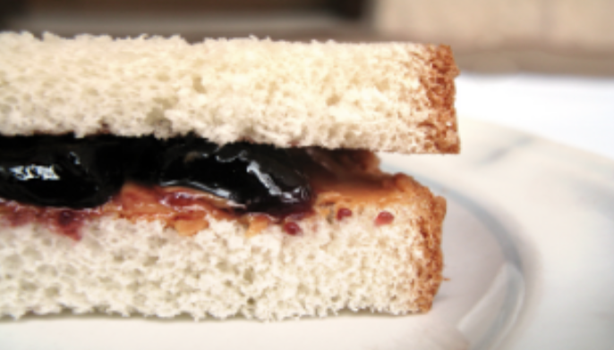

The Perfect PB&J

Description
This peanut butter and jelly sandwich is my favorite sandwich. It has the perfect balance of ingregients and looks great when made right.
Heres a link to another set of directions
Ingredients
- 2 slices of white bread
- 1 jar of grape jelly
- 1 jar of creamy peanut butter
- A butter knife
- A sharp knife
- A cutting board
Directions
- Lay both slices of bread next to eachother on a cutting board.
- With the butter knife, spread 1/8 inch layer of peanut butter on the left side.
- On the right side, spread a 1/8 inch layer of jelly.